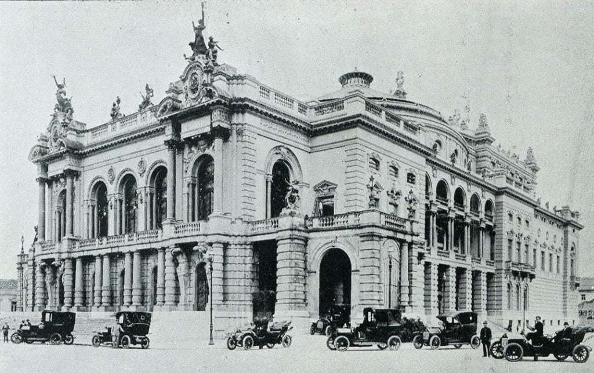
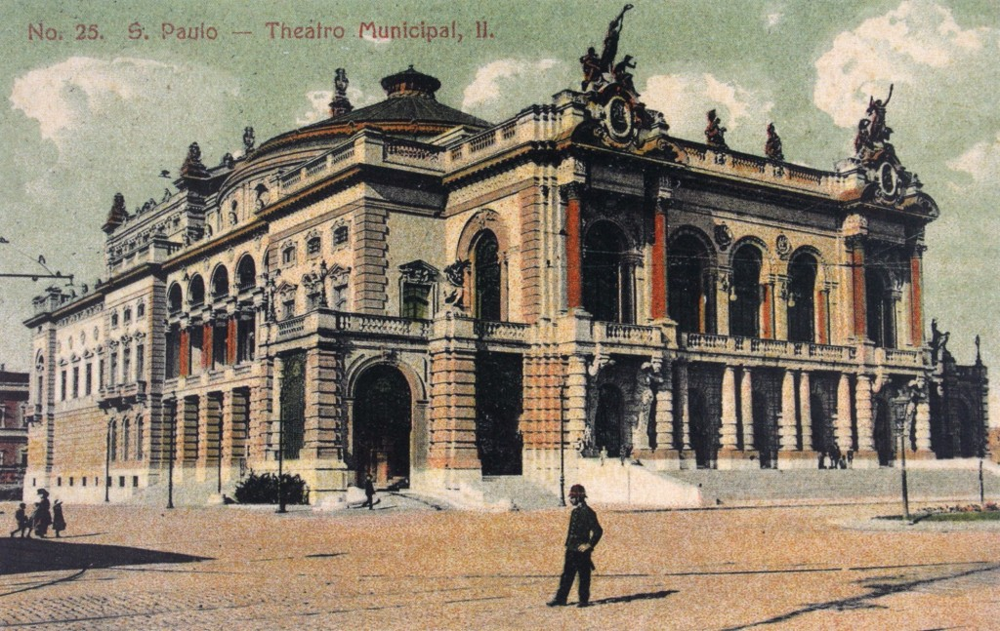
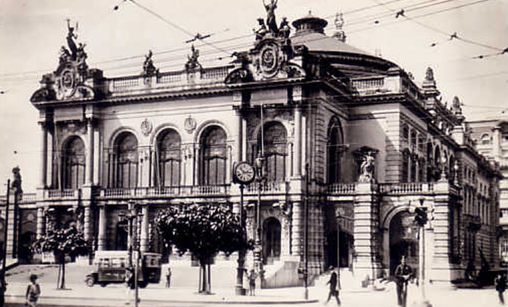

O projeto assinado pelo escritório Ramos de Azevedo – em colaboração com os italianos Cláudio Rossi e Domiziano Rossi – teve início em 1903 e foi entregue à cidade 8 anos mais tarde. Em setembro de 1911, o Theatro Municipal foi aberto para ilustres convidados diante de uma multidão de 20 mil pessoas deslumbradas com a pompa e com uma iluminação espetacular para a época – o prédio foi o primeiro a ser totalmente abastecido por energia elétrica. Em mais de 100 anos de história, três grandes reformas preservaram, renovaram e ampliaram o Theatro, que hoje conta com um edifício restaurado. Em 2012 foram criadas as instalações da Praça das Artes para abrigar os corpos artísticos, as escolas municipais de música e dança e as múltiplas atividades do Complexo Theatro Municipal.
Imagens
Inaugurada em 1911
Inspirado na Ópera de Paris
Projeto de Ramos de Azevedo, Claudio Rossi e Domiziano Rossi



O teatro é uma verdadeira obra de arte arquitetônica, com influência neoclássicas e art nouveau. Seu interior é adornado com mármores, vitrais e detalhes em ouro, que conferem um ar majestoso e impotente. Além de suas arquitetura impotente e beleza estética, o teatro é um importante marco da cultura paulistana e brasileira. A localização do Theatro Municipal é privilegiada, na Praça Ramos de Azevedo, em frente ao Viaduto do Chá.
Vídeos
Comemoração 112 anos - 2023
WebSerie: Memória Viva de São Paulo - 2021
Educativo: Você conhece o Theatro Municipal? - 2020